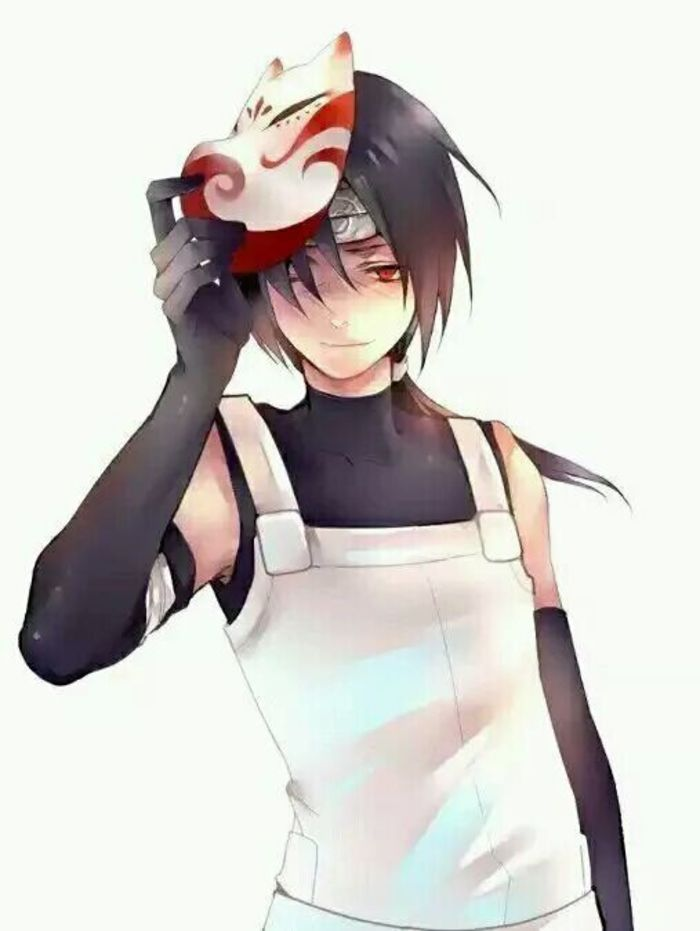
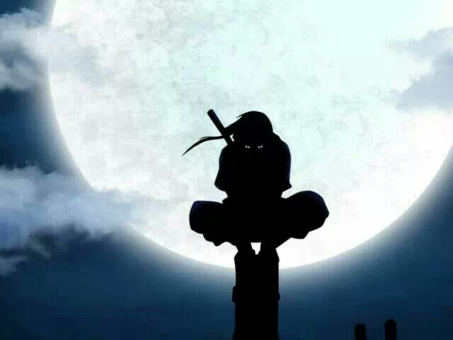
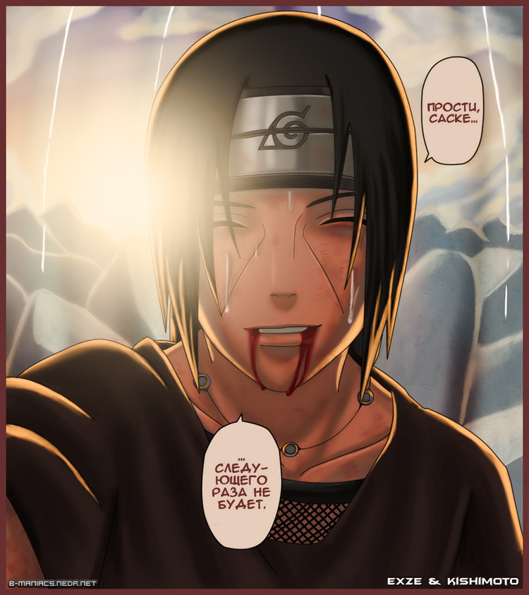
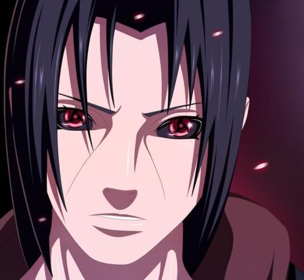

生涯
-
年幼时
木叶九尾之乱中，5岁的鼬一个人在家保护还是婴儿的弟弟佐助。7岁从忍者学校毕业，鼬是宇智波一族与宇智波止水齐名的少年天才，两人也是挚友。第三次忍界大战，鼬年仅4岁就目睹了太多的死亡，对于这么小年纪就经历战争的他来说，战争简直就是地狱，这个创伤使鼬厌恶战乱，从此成为一个热爱和平的男人。7岁以全校第一的成绩从忍者学校毕业，被称为老师成为他见过最优秀的学生8岁便开了写轮眼，10岁升为中忍，11岁加入暗部，受止水影响，从小的他就能超越狭隘的本族主义，尽心尽力为村子做事。后加入暗部的他不但承担着宇智波一族与村子沟通的桥梁，更是作为木叶和宇智波的双重间谍而往来于两者之间。
 -
宇智波政变前夕
偷袭止水，夺取了止水的右眼，单被止水以瞬身术逃脱。在失去右眼之后止水为了不让左眼再落入其手、维护宇智波之名，将左眼送给鼬，并嘱咐鼬要为了和平使用它、全力阻止宇智波政变，并且让鼬对他的事情保密，最终投南贺河自尽。宇智波鼬亲眼目睹止水自杀，并开启万花筒写轮眼，宇智波鼬使用万花筒写轮眼阅读了神社内六道仙人留下的只有万花筒写轮眼才能阅读的文字）。由于止水自杀且宇智波鼬并没有参加那晚的集会，宇智波族人怀疑是宇智波鼬杀死了止水，被鼬断然否定（止水本被族人要求监视不被信任的宇智波鼬）。由于宇智波一族在与木叶的政治斗争中总受压制，一族人不甘心便在其父亲的带领下叛变木叶，鼬不得已成为双重间谍，时年13岁。之后他背负污名成为叛忍加入晓组织监视其内部动作。

-
宇智波政变
政变当晚宇智波鼬和宇智波带土一起动手诛灭了全族，宇智波鼬含泪与父母道别，他们将佐助托付给了鼬，并给弟弟设定了一个向自己复仇这一目标之后逃离木叶临走前威胁团藏如果敢伤害佐助就将村子情报出卖敌国。逃离之后根据带土的建议加入了他的组织-晓。
 -
兄弟之战
佐助杀死大蛇丸后成立了鹰小队目的是杀死宇智波鼬。在身患重病，身体濒临极限的情况下，鼬与佐助约战。三日后与佐助交战，在战斗中，鼬根本没有将佐助置于死地的想法，只是为了令佐助摆脱大蛇丸的咒印束缚而做戏要挖其双目，临死前他将佐助逼到了极限，在佐助的杀手锏-麒麟放出来后使用须佐能乎成功抵挡了忍术，之后佐助精疲力竭，鼬之死
 -
转生
第四次忍界大战时期，鼬被药师兜用“秽土转生”重新召唤至人世，开战后和被秽土转生的长门一起行动。之后鼬决定亲自去阻止秽土转生，在路上与佐助相遇，被佐助问及关于自己的真相。后来鼬和佐助联手在洞穴中对抗兜，兄弟羁绊再现。在战斗中，鼬向兜施展了与“伊邪那岐”一对的另一个究极瞳术——决定命运的“伊邪那美”，使兜陷入永恒轮回的命运之中，并利用幻术得知了解除秽土转生的结印方法，因而解除了秽土转生。在秽土转生即将解除之际，鼬对佐助说“不论你选择什么样的道路，我都一直深爱着你”，之后灵魂升天。
